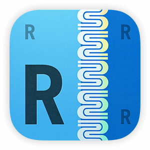

Overview
- Background: BusyBus is a regional bus service that serves thousands of commuters in a large city. Due to expansion, numerous bus lines have been recently added and many of those lines stop at the same bus stop. BusyBus users want to know what the next arriving bus is and how much time they have to get to the bus stop.
- Duration: September 2017 (2 weeks)
- My Role: Research, Ideation, User Experience, User Interface
- Tools:

Research & concept
Competitive analysis
Moovit and  Transit provide a feature similar to Google Maps where you enter a starting and ending destination and the application will provide several transit options, sorted by time to arrival. Both applications offer real-time tracking, which allows users to see where their busses or trains are on a map.
Transit provide a feature similar to Google Maps where you enter a starting and ending destination and the application will provide several transit options, sorted by time to arrival. Both applications offer real-time tracking, which allows users to see where their busses or trains are on a map.

Moovit app detail

Transit app detail
I personally use  Routesy for my transit needs. I like that it has all transit options in one place and allows you to search both by nearby stops and by line.
You can bookmark favorites and see the arrival times of the next few buses for a particular line, in case you miss the next one.
However, the lack of a real-time map visual has caused problems where I’ve actually gotten on trains heading in the opposite direction.
Routesey app detail
User stories
Living in San Francisco where we have multiple transit options, many of which stop at the same location, and having tried multiple public transit trackers myself, one thing I can say for certain is that there aren’t many that get it right.
Before jumping into design, I laid out the key tasks that I wanted my application to accomplish:
- Help users identify which bus stops they are closest to
- Help users identify when the next bus is arriving
- For bus stops with multiple lines running through, help users identify which lines are approaching
- Allow users to track their busses on a map in real-time, like Uber or Lyft
Initial design
I created a few mockups in Sketch to test with users:
Initial working design
Some feedback I received that I implemented into the final design:
- The text inside circles indicating the bus stop is small and difficult to read and doesn't accommodate longer bus line names, e.g. 680R or 157
- Users would like to see several following arrival times, not just the next arriving bus, in case they can't get to the stop in time
- The three-dot menu is not intuitive in indicating a drop down window for more information; users expected a menu to pop up above or below the three dots
- In the map view, users are not able to tell where the bus stops are exactly located
Final design
Home screen
Final home screen design
On the home screen, users can toggle between seeing what stops are nearby (including walking distance), searching for a specific line, and their favorites. When viewing nearby stops, users can see their relative location on a map as well as which busses serve which stops. To see a detailed view of a particular stop, users can tap the left arrow to navigate to the bus stop display view.
The initial circle design has been updated to a rectangular design to allow for easier reading and to fit longer bus line names.
Bus stop display
Final bus stop display design
In the bus stop view, each of the bus lines that serve the stop, are displayed in a scrollable list in chronological order of next arrival time. Updating the design to show the next 3 bus arrival times allows users to plan their schedule in case they can't make it to the stop by the next arrival time.
The three-dot menu has been swapped out for a carrot menu that is more intuitive in indicating a drop-down window.
The user also has the option to change the direction they are traveling in (Eastbound vs. Westbound vs. Northbound vs. Southbound, etc.) by tapping the drop down arrow in the header. Changing the direction will refresh the screen and populate the proper times for buses traveling in the opposite direction.
Live map detail
Final bus stop detail design
Tapping the carrot on the right hand side of each bus line will populate a live map drop-down showing the real-time location of the bus and intended route, as well as the user's current location. The final design incorporates pinned circles to show users the exact location of the bus stops along the line of interest.
In order to avoid confusion about which bus stop to walk to while still highlighting the different stops on the route, the correct stop is enlarged and tagged with a pin showing how far away the nearest bus is for that particular line.
Conclusion
From this project, I learned that it's important to identify what the key pieces of information are that most users need to see. It's really easy to fall on both sides of this: showing too much information and confusing the user, or not showing enough information and frustrating the user.
Going into the project, I knew that public transit apps tend to have too much information, and so I tried to err on the side of bare bones and simple. However, after testing my design, I realized it was a litle too bare bones: users also wanted to know when subsequent busses would be arriving. I reworked the design to include those key pieces of information and hid the rest to avoid clutter and unnecessary overload of information.
If I had more time to revisit this project, I would want to conduct a few more interviews and create user personas. Different user types will have different use cases for the product, and may need to see varying amounts of information. The product works for the basic users' needs, but how does it address other user types?